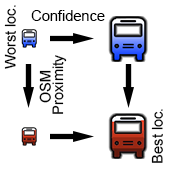

<!DOCTYPE html>

<html lang="en">

	<head>
		<title>Ally Code Challenge</title>
		<meta charset="utf-8">
		<meta name="viewport" content="width=device-width, initial-scale=1">
		<link rel="icon" href="icon/ally_logo.png">
		<link href="bootstrap-3.3.6-dist/css/bootstrap.min.css" rel="stylesheet">
		<link href="css/css.css" rel="stylesheet">
	</head>

</html>

<body>

	<!--Define div to hold map object-->
	<div id="map-container" class="container-fluid"></div>

	<!--Ally Logo-->
	<div id="ally_logo" class="text-xs-center">
  		
	</div>

	<!--Label-->
	<div id="label" class="dropdown">
		<button class="btn btn-disabled" type="button" style="cursor: default;">
	  		Ally <span class="badge">Making Cities Smarter</span> - Software Developer (GIS) Code Challenge
		</button>
	</div>

	<!--Legend of our markers-->
	<div id="lagend" class="text-xs-center">
  		
	</div>

	<!--Dropdown menu to select different data (bus stops and routes)-->
	<div class="dropdown">
		<button class="btn btn-primary dropdown-toggle" type="button" data-toggle="dropdown"> Select Layers
			<span class="caret"></span></button>
			<ul class="dropdown-menu">
				<li><a class="small" data-value="option1" tabIndex="-1"><input type="checkbox" id="cb_act_pts" onclick="fun_act_pts()"/>&nbsp;Activity Points</a></li>
				<li><a class="small" data-value="option1" tabIndex="-1"><input type="checkbox" id="cb_cal_bus_stops" onclick="fun_cal_bus_stops()"/>&nbsp;Derived Bus Stops</a></li>
				<li><a class="small" data-value="option2" tabIndex="-1"><input type="checkbox" id="cb_osm_bus_stops" onclick="fun_osm_bus_stops()"/>&nbsp;OpenStreetMap Bus Stops</a></li>
				<li><a class="small" data-value="option3" tabIndex="-1"><input type="checkbox" id="cb_cal_bus_route" onclick="fun_cal_bus_route()"/>&nbsp;Bus Routes</a></li>
			</ul>
	</div>

	<!--JS stuff-->
	<script src="jQuery-2.2.0/jquery-2.2.0.min.js"></script>
	<script src="bootstrap-3.3.6-dist/js/bootstrap.min.js"></script>
	<script src="bootstrap-3.3.6-dist/js/bootstrap-dialog.min.js"></script>
	<script src="http://maps.google.com/maps/api/js"></script>
	<script src="js/initmap.js"></script>
	<script src="js/layers.js"></script>
	<script src="js/activity_pts.js"></script>
	<script src="js/osm_bus_pts.js"></script>
	<script src="js/bus_routes.js"></script>
	<script src="js/act_pts.js"></script>
</body>